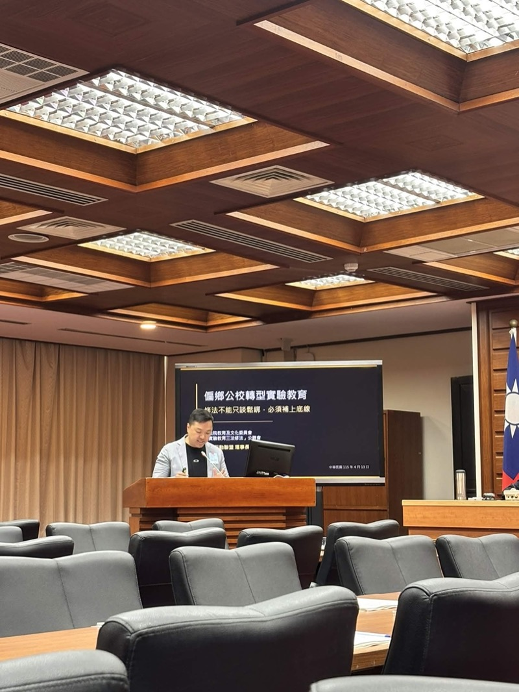

台灣實驗教育如何與國際模式相比？

關鍵重點
- 核心觀點： 台灣無退場機制的大規模法規排除獨特於國際，違反「制度紅利應逐步收回」原則。
- 關鍵數據： 美國CREDO 2023年研究180萬名學生，特許校生增長讀寫16天、數學6天；英國學院近年研究與地方校無顯著差異；德國僅15所實驗校，嚴格遵守憲法平等保護。
- 行動呼籲： 台灣應建立明確退場機制、強制性績效評鑑、弱勢保障底線，調整實驗教育政策方向，確保教育公共性與問責透明度。
成效驗證與台灣現狀？
台灣實驗教育面臨嚴重的成效驗證危機。國內實驗教育碩博士論文僅約78篇，絕大多數為質性個案研究，缺乏跨校跨區長期比較量化研究。主要問題包括：
- 「先放行、後補證據」：學校幾乎沒有強制退場機制，審議常流於合規性申報，無法有效評估教學成效。
- 偏鄉轉型無法逆轉少子化：成功案例如雲林樟湖國小從不足30人增至百人以上，但學生增長部分來自跨區吸引，非在地回升。
- 招生壓力迫使特色化：學校利用法規排除追求特色與招生，實驗教育淪為求生工具而非教育創新。
國際案例為台灣提供鏡鑑：美國特許校必須達成契約目標或失去營運執照；英國學院接受定期Ofsted檢查。台灣卻缺乏這些外在評估壓力，導致成效驗證機制虛化。
美國、英國、德國的實驗教育模式為何不同？
美國特許學校：契約治理、明確退場
美國特許學校(Charter Schools)採公費免學費、契約型治理。CREDO 2023年研究涵蓋180萬名學生¹（來自29州及華盛頓特區），追蹤2015-2019年學習成長。核心發現：
- 整體正向：典型特許校學生讀寫進度超越同齡公校生16天、數學6天¹。
- 弱勢優勢：黑人學生讀寫增長35天、數學29天¹；西裔學生讀寫30天、數學19天。
- 關鍵機制：授權機關(Authorizer)可依績效決定續約，成績不達標直接失去執照——強制退場²。
美國另有約3,000所磁性學校⁵(NCES 2021-22統計)，是特色公校方案，提供STEM、藝術等主題課程，降低族裔隔離，但不涉及法規排除，規模與特許校無法相比。
英國學院：自治加強問責
英國學院(Academies)自2010年起大規模推動³，享高度自治權：可不完全遵循國定課程、自主聘僱教師。但公共性底線未退讓：
- 必須遵守招生規則、SEND(特殊教育需求)法典保障、接受Ofsted(英國教育評鑑委員會)定期檢查。
- 近年研究顯示英國學院與地方維持學校在學習成就上無顯著差異，無法證實高自治權帶來優勢。
- 核心模式：「自治工具改變」但「公共問責不退、弱勢保障不退」，形成「自治加強問責」架構。
德國實驗學校：憲法保護、規模受限
德國實驗學校(Versuchsschulen)全國僅約15所⁶，多為大學合作個案。規模極小的原因在於憲法保障：基本法(Grundgesetz)第7條第4項禁止以經濟能力篩選學生，限制了實驗教育的推動空間⁷。
- 實驗是例外：德國教育以公共性與平等為原則，實驗校是特例，不可成為常態。
- 大學聯動：多數實驗校與大學合作，作為師資培育與教學創新的實驗場域。
「國外多數是『公共性不退、治理工具改變』；台灣卻是『先開出法規彈性，再慢慢補問責』——這就是台灣實驗教育的『制度紅利』危機。」
——國教行動聯盟政策分析
台灣實驗教育面臨哪三項核心風險？
退場機制缺失
台灣實驗教育幾乎無強制退場機制，無論成效好壞都可持續營運。美國特許校若未達績效就失執照；台灣卻以「持續改善」名義無限期延續，違反制度試驗本質。
弱勢保障底線
台灣法規排除無下限，學校可不遵循融合教育、性平保護等法規。英國即使高自治權仍強制遵守SEND法典。台灣應建立不可豁免的保護標準，確保身障、低收弱勢學生權利。
獨立成效評鑑
台灣缺乏跨校長期量化比較研究。英國有Ofsted；美國有CREDO式大規模評鑑。台灣應投入建立獨立成效評鑑機制，明確判定實驗教育是否優於傳統校。
台灣應如何調整實驗教育政策方向？
基於國際比較，國教盟建議台灣實驗教育改革應掌握三個原則：
訂定試驗期限(如3-5年)與績效指標，達不到標準直接終止實驗認證。不應無限期延續，應學習美國授權機制的強制力。
建立像英國Ofsted、美國CREDO的獨立評鑑機制，定期公開成效數據。特別是與同類型公校的對照研究，明確判定實驗教育是否創造附加價值。
法規排除應有明確清單，不可豁免融合教育、性平、身心障礙保護等核心保障。特色課程可創新，公共性底線必須遵守。
常見問題與快速問答？
台灣實驗教育法規排除的範圍有多大？
台灣以特別法賦予學校型態實驗教育校廣泛法規排除，包括課程、教學、人事等，幾乎沒有退場機制。這與美國契約型治理、英國自治加強問責的模式差異大。
美國特許學校表現如何？
CREDO 2023年研究180萬名學生發現正向成長：讀寫16天、數學6天進度超越公校。黑人學生進度最佳(讀寫35天、數學29天)，顯示實驗教育對弱勢學生效益。
英國學院為何受歡迎但無顯著優勢？
英國學院享高自治權可不完全遵循課程，但必須遵守招生規則、SEND保障、接受Ofsted檢查。研究顯示與地方校無顯著差異，核心是「自治加強問責」。
德國實驗校規模為何如此小？
德國基本法第7條第4項禁止以經濟能力篩選學生，全國約15所實驗校多大學合作。實驗教育受嚴格憲法保障，無法大規模推動個案式模式。
什麼是台灣實驗教育的「制度紅利」？
台灣先通過寬鬆特別法賦予法規排除，學校利用此優勢求生(招生、特色化)，再慢慢補問責機制。與國外「公共性不退、治理改變」的策略完全相反。
美國磁性學校與特許校有何不同？
美國約3000所磁性校是特色公校，提供STEM、藝術等特色課程但不涉及法規排除，主要降低族裔隔離。數量與規模遠小於特許校(約7500校)。
台灣應該如何向國際模式學習？
建議採英國模式：保留自治優勢但建立明確退場機制、強制性績效評鑑、弱勢保障底線。避免先開法規彈性再補問責，應設定清晰的試驗期與評估標準。
參考文獻
- Center for Research on Education Outcomes (CREDO). (2023). As a Matter of Fact: The National Charter School Study III 2023. Stanford University. Retrieved from https://ncss3.stanford.edu/wp-content/uploads/2023/06/Credo-NCSS3-Report.pdf
- The 74 Million. (2023). National Study of 1.8 Million Charter Students Shows Charter Pupils Outperform Peers at Traditional Public Schools. Retrieved from https://www.the74million.org/article/national-study-of-1-8-million-charter-students-shows-charter-pupils-outperform-peers-at-traditional-public-schools/
- UK Government. (2010). Academies Annual Report 2010/11. Department for Education. Retrieved from https://assets.publishing.service.gov.uk/media/5a7a462040f0b66a2fc0126e/academies_annual_report_2010-11.pdf
- UK Government. (2015). 2010 to 2015 Government Policy: Academies and Free Schools. Department for Education. Retrieved from https://www.gov.uk/government/publications/2010-to-2015-government-policy-academies-and-free-schools
- National Center for Education Statistics (NCES). (2022). Number of public elementary and secondary schools, by school level, type, and charter, magnet, and virtual status: School years 2010-11 through 2021-22. U.S. Department of Education. Retrieved from https://nces.ed.gov/programs/digest/d22/tables/dt22_216.10.asp
- Bäßler, J., & Hopf, D. (2011). Die Rahmenbedingungen der Versuchsschulen [The Framework Conditions of Experimental Schools]. Zeitschrift für Pädagogik, 44, Beiheft. Retrieved from https://www.pedocs.de/volltexte/2011/3933/pdf/ZfPaed_44_Beiheft_Baessler_Hopf_Rahmenbedingungen_D_A.pdf
- Bundesrepublik Deutschland. (1949). Grundgesetz für die Bundesrepublik Deutschland [Basic Law for the Federal Republic of Germany], Article 7, Paragraph 4. Retrieved from https://www.gesetze-im-internet.de/gg/art_7.html
- 國教行動聯盟. (2026). 台灣偏鄉公校為何大量轉型實驗教育？——實驗教育三法修法分析與建議. 政策知識庫. Retrieved from https://naer-tw.github.io/policy/education-reform/2026-04-12-偏鄉公校轉型實驗教育.html